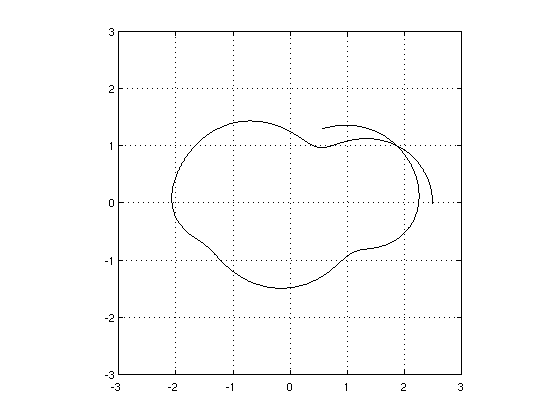
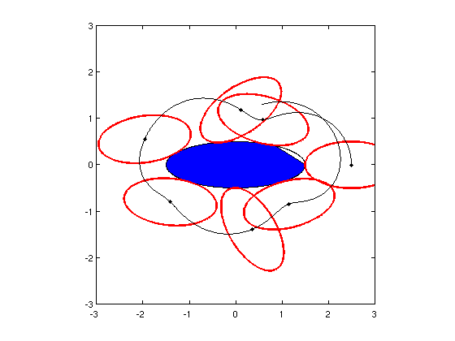
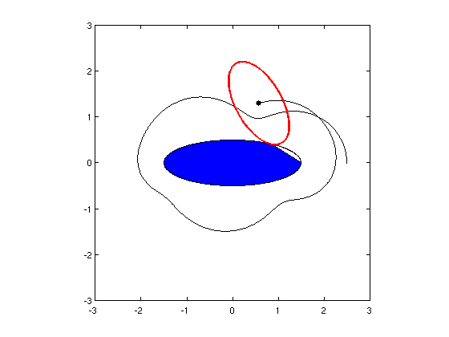

An ellipse rolling around another ellipse
Nick Trefethen, 18th October 2011
(Chebfun example geom/Ellipses.m)
Here's a problem from Oxford's Numerical Analysis Group Problem Solving Squad in October 2011. A 2x1 ellipse is lined up touching a 3x1 ellipse tip-to-tip, and then the little ellipse rolls around the big one with boundaries touching and not slipping. How long is the trajectory of the center of the little ellipse from the starting point to when it completes a full 360-degree revolution?
For convenience, since the geometry is 2D, let's use complex variables z1(t) and z2(t) to track the contact points on the two ellipse boundaries as a function of time t, assuming motion at speed 1. It is convenient to let theta1(t) be the argument of z1(t) if it is scaled down to the unit circle:
z1 = L1 cos(theta1)/2 + i sin(theta1)/2 , that is,
theta1 = arctan(imag(z1)/(real(z1)/L1).
We have
dz1/dtheta1 = -L1 sin(theta1)/2 + i cos(theta1)/2 (1)
and since t is the same as arc length,
dt/dtheta1 = sqrt(L1^2 sin^2(theta1) + cos^2(theta1))/2. (2)
Dividing (1) by (2) gives us an ODE for dz1/dt. Similarly, on the small ellipse a particle starts at the left tip and moves clockwise at speed 1: z2(t). The equations are the same with 1 replaced by 2 and with a minus sign introduced in (2) since theta2 is decreasing with t rather than increasing.
Here is a Chebfun computation of the two ellipses from from time 0 to tmax=7.5. The functions z1(t) and z2(t) trace out the ellipses.
tic L1 = 3; theta1 = @(z1) atan2(imag(z1),real(z1)/L1); L2 = 2; theta2 = @(z2) atan2(imag(z2),real(z2)/L2); ode1 = @(t,z1) (-L1*sin(theta1(z1))+1i*cos(theta1(z1)))./... sqrt(L1^2*sin(theta1(z1)).^2+cos(theta1(z1)).^2); ode2 = @(t,z2) (L2*sin(theta2(z2))-1i*cos(theta2(z2)))./... sqrt(L2^2*sin(theta2(z2)).^2+cos(theta2(z2)).^2); opts = odeset('abstol',1e-13,'reltol',1e-13); tmax = 7.5; z1 = ode113(ode1,domain(0,tmax), L1/2,opts); z2 = ode113(ode2,domain(0,tmax),-L2/2,opts);
Now what about the trajectory traced by the midpoint, w(t)? A little geometric thought reveals the right formula. Here is a calculation and a plot:
w = z1 - z2.*diff(z1)./diff(z2); LW = 'linewidth'; plot(w,'k',LW,1), grid on, axis(3*[-1 1 -1 1]), axis square
To find the answer to the problem posed, we need to know the time at which imag(w(t))=0:
format long, tfinal = roots(imag(w{5,7.5}))
tfinal = 6.781868737249073
The length of the trajectory is the 1-norm of the derivative of w from t=0 to t=tfinal:
trajectory_length = norm(diff(w{0,tfinal}),1)
trajectory_length = 11.755625979501648
The total computer time for the computations up to this point is as follows:
toc
Elapsed time is 4.275636 seconds.
Now let's plot the motion, using an anonymous function ell2 which returns a chebfun of the position of ellipse 2 at time t. We plot the big ellipse together with a succession of small ellipses:
ell2 = @(t) w(t) + z2*(z1(t)-w(t))/z2(t); fill(real(z1),imag(z1),'b'), hold on, axis(3*[-1 1 -1 1]), axis square for t = 0:1:6 plot(ell2(t),'r',LW,2), plot(w(t),'.k','markersize',12) end plot(w,'k',LW,1)
(The imperfection in the blue fill is a bug in Matlab, not Chebfun.) Or we can make a movie, like this:
hold off, fill(real(z1),imag(z1),'b'), hold on axis(3*[-1 1 -1 1]), axis square, plot(w,'k',LW,1) for t = 0:.05:tmax h1 = plot(ell2(t),'r',LW,2); h2 = plot(w(t),'.k','markersize',18); pause(.01) if t<tmax, delete(h1(1)), delete(h2), end end